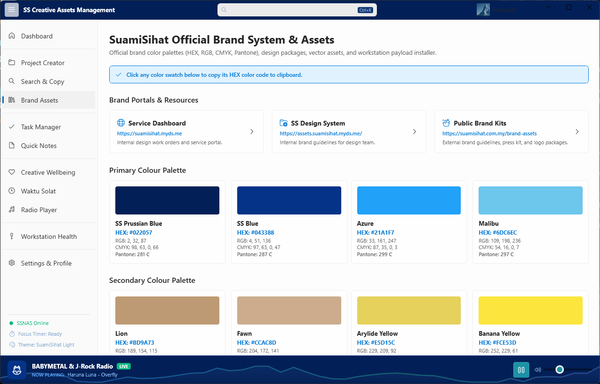
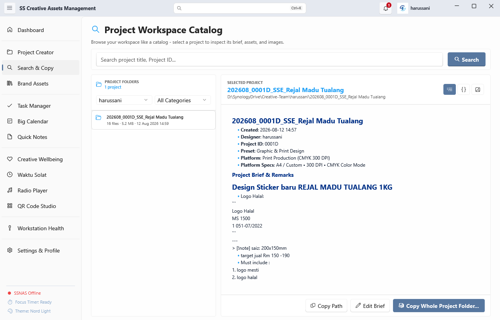
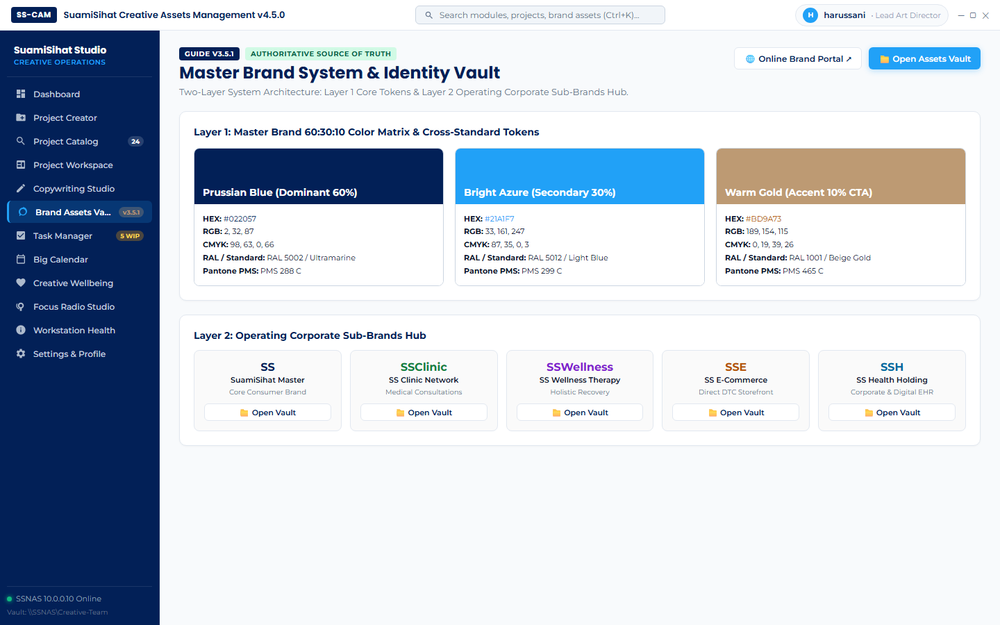
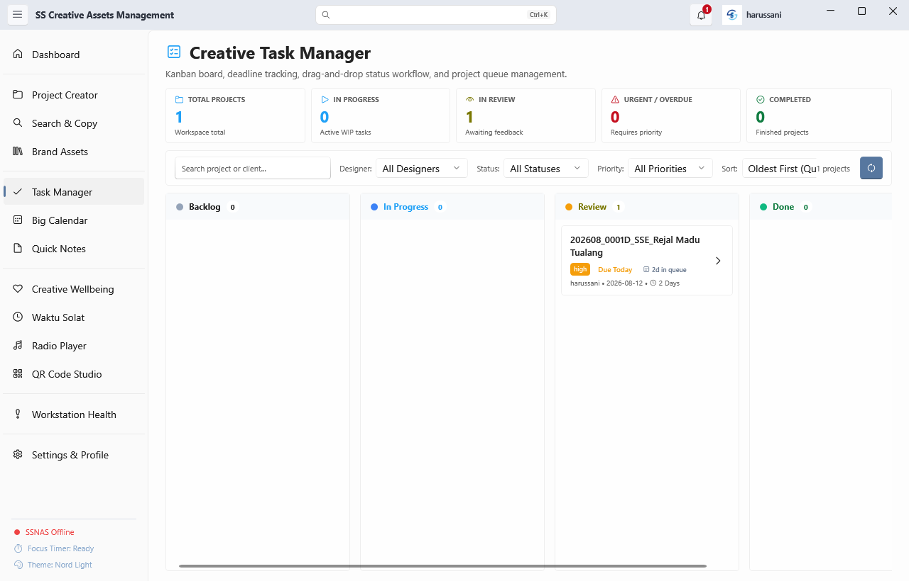
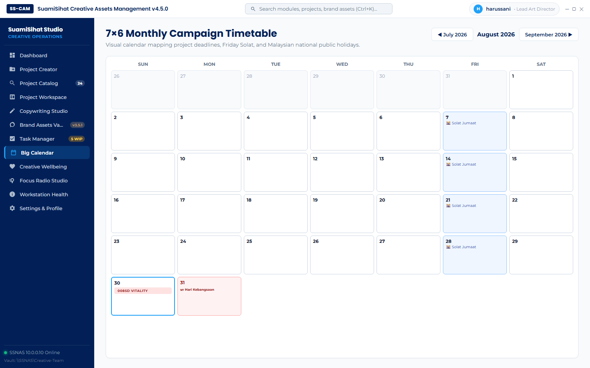
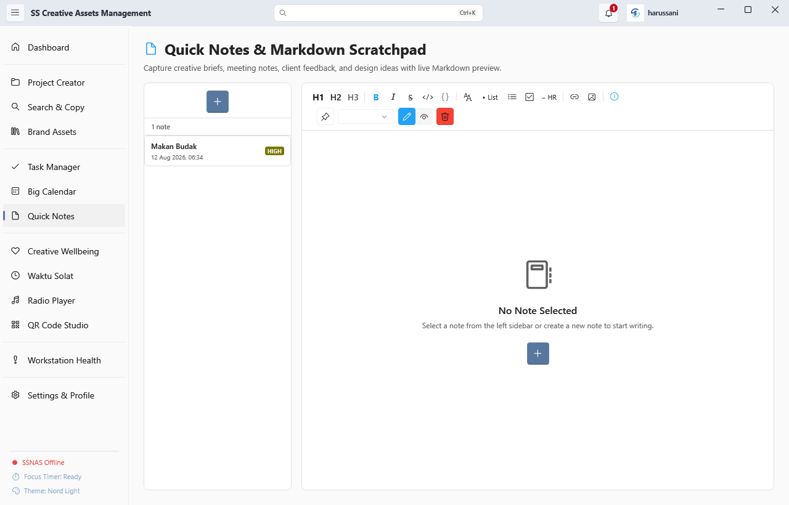
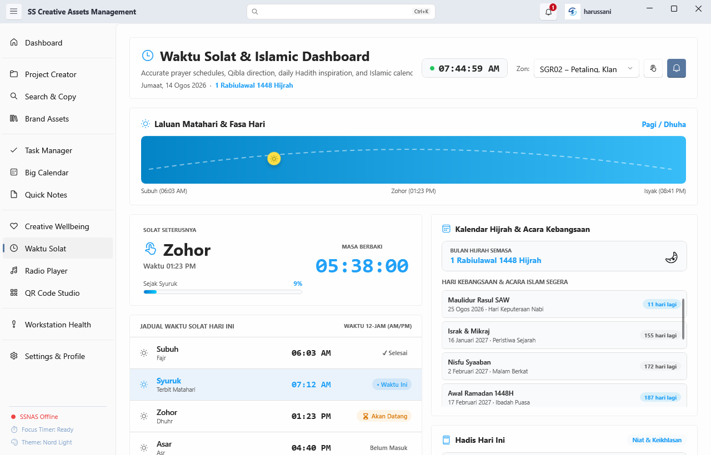
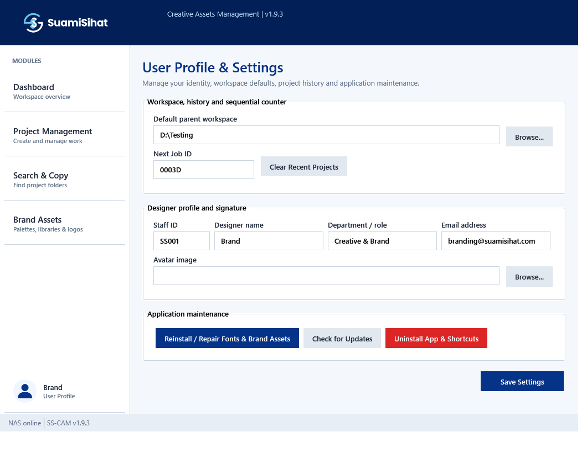

The official Windows desktop workstation suite for SuamiSihat designers. Standardize folder creation, inspect live brand colors, master campaign tasks, and nurture creative mental health.
Engineered specifically to solve real daily problems faced by SuamiSihat creative designers.
Automates sequential 4-digit job IDs, standardized folder trees, full-text workspace indexer, and markdown README previewer.
YAML frontmatter Kanban status board, 7×6 Big Calendar project timetable, FIFO queue age tracking, and campaign deadline markers.
Sleek 2-column brand palette explorer with live HEX, RGB, CMYK, Pantone inspector, vector QR Code studio, and font installer.
DPAPI Mind Drops journal, 16s box breathing coach, fatigue check-ins, Malaysian focus radio stations, and JAKIM Waktu Solat timetable.
Hover or click feature hotspot pins to inspect key UI capabilities.








High-intensity design sprints require balance. SS-CAM integrates mental health tools right into your desktop environment so you stay inspired, calm, and grounded throughout the workday.
Download SS-CAM v3.5.0 today — zero installer required.
Download SS-CAM v3.5.0 (.exe)